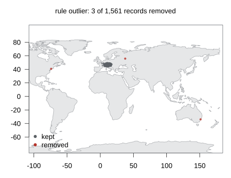
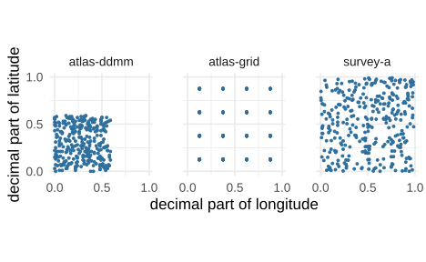

Six tests compare a record with the other records of its species or
its dataset instead of with reference data: outlier
(geographic outliers within a species), the three fossil outlier tests,
and the two dataset tests dataset_ddmm and
dataset_rounded, which look for conversion and gridding
errors in a dataset’s coordinates as a whole. They are CoordinateCleaner’s
cc_outl(), cf_age(), cf_outl(),
cf_range(), cd_ddmm() and
cd_round(). Because a group has to be complete before any
of its records can be judged, these tests run in a pass of their own
over the whole input before the record tests. This article runs the
geographic and dataset tests on a simulated table of alpine plants, adds
the artificial-hotspot test aohi, and shows how the group
pass works on streamed input. The fossil outlier tests are shown in the
fossil article. Installation is covered in Get started.
Example data
set.seed(11)
sp <- data.frame(species = c("Erica carnea", "Gentiana verna", "Pinus mugo", "Salix retusa"),
lon = c(12, 10, 14, 11), lat = c(47, 46.5, 47.5, 46.8), sd = c(1.5, 2, 1, 1.2),
n = c(400, 250, 300, 6))
x <- do.call(rbind, lapply(seq_len(nrow(sp)), function(i)
data.frame(species = sp$species[i], decimalLongitude = round(rnorm(sp$n[i], sp$lon[i], sp$sd[i]), 5),
decimalLatitude = round(rnorm(sp$n[i], sp$lat[i], sp$sd[i] / 2), 5))))
x$datasetKey <- sample(c("survey-a", "survey-b", "herbarium"), nrow(x), TRUE)
x$truth <- "clean"The table has 961 records of four alpine plants around the Eastern Alps, spread over three datasets; Salix retusa has only 6 records. Into it go four herbarium records placed on the wrong continent or far outside the species’ area (New York, Sydney, Paris, Moscow), one more Pinus mugo record inside its area as a control, and two datasets of 300 records each with the errors the dataset tests look for: an atlas whose coordinates were converted from degrees and minutes as if they were decimals, so that no decimal part exceeds .59, and an atlas published on the centres of a quarter-degree grid:
far <- data.frame(species = c("Erica carnea", "Erica carnea", "Gentiana verna", "Pinus mugo", "Pinus mugo"),
decimalLongitude = c(-74.0, 151.2, 2.35, 12.1, 37.6), decimalLatitude = c(40.7, -33.9, 48.86, 47.3, 55.8),
datasetKey = "herbarium", truth = c("far", "far", "far", "clean", "far"))
ddmm <- data.frame(species = sample(sp$species[1:3], 300, TRUE),
decimalLongitude = floor(runif(300, 8, 16)) + sample(0:59, 300, TRUE) / 100,
decimalLatitude = floor(runif(300, 45, 48)) + sample(0:59, 300, TRUE) / 100,
datasetKey = "atlas-ddmm", truth = "ddmm")
grid <- data.frame(species = sample(sp$species[1:3], 300, TRUE),
decimalLongitude = round(runif(300, 8, 16) * 4) / 4 + 0.125,
decimalLatitude = round(runif(300, 45, 48) * 4) / 4 + 0.125,
datasetKey = "atlas-grid", truth = "grid")
x <- rbind(x, far, ddmm, grid)
table(x$datasetKey, x$truth)
#>
#> clean ddmm far grid
#> atlas-ddmm 0 300 0 0
#> atlas-grid 0 0 0 300
#> herbarium 302 0 4 0
#> survey-a 326 0 0 0
#> survey-b 329 0 0 0Geographic outliers
f <- flag_occurrences(x, tests = c("invalid", "outlier"))
table(truth = f$truth, outlier = f$flag_outlier)
#> outlier
#> truth FALSE TRUE
#> clean 957 0
#> ddmm 300 0
#> far 1 3
#> grid 300 0Three of the four far records are flagged and no clean record is. For
each species the test takes every record’s mean distance to the species’
other records and flags those above Q75 + 5 x IQR of these means, CoordinateCleaner’s
default. The Gentiana verna record in Paris stays below that
fence: the simulated Gentiana records spread over about 2
degrees of longitude around 10 E, so a point 7.6 degrees west raises the
mean distance less than the fence allows. Salix retusa, with 6
distinct points, is below min_occs = 7 and is not
tested.
The fence and the statistic are set through settings.
With method = "mad" the fence is median + 5 x MAD, with
method = "distance" a record is flagged when its nearest
other record of the species is more than tdi km away (1000
km by default):
m <- sapply(c("quantile", "mad", "distance"), function(meth)
tapply(flag_occurrences(x, tests = "outlier", settings = list(outlier = list(method = meth)))$flag_outlier,
x$truth, sum))
knitr::kable(m)| quantile | mad | distance | |
|---|---|---|---|
| clean | 0 | 3 | 0 |
| ddmm | 0 | 9 | 0 |
| far | 3 | 4 | 3 |
| grid | 0 | 3 | 0 |
The MAD fence is the stricter one here: it catches all four far records but also 15 records inside the species’ areas, most of them in the converted atlas, whose coordinates are shifted towards the south-west of each degree square. The distance method flags the same three far records as the quantile fence; the Paris record is within 1000 km of Gentiana records in the Alps. The map shows the default result:

CoordinateCleaner’s sampling correction leaves outliers unflagged in
countries with few records, where an isolated record is more likely a
real but poorly documented population than an error. It needs the number
of records per country; with that table, sampling_thresh
keeps an outlier flagged only in countries whose record density lies
above that quantile of all countries’ densities:
counts <- data.frame(country = c("US", "AU", "FR", "RU", "AT", "DE", "IT", "CH", "SI"),
records = c(4e8, 1.2e8, 1e8, 6e6, 2.5e7, 1.8e8, 5e7, 4e7, 6e6))
fs <- flag_occurrences(x, tests = c("invalid", "outlier"), gazetteers = list(sampling = counts),
settings = list(outlier = list(sampling_thresh = 0.25)))
x[fs$flag_outlier != f$flag_outlier, c("species", "decimalLongitude", "decimalLatitude")]
#> species decimalLongitude decimalLatitude
#> 957 Erica carnea -74.0 40.7
#> 958 Erica carnea 151.2 -33.9
#> 961 Pinus mugo 37.6 55.8Russia, Australia and the United States have the three lowest
densities in this table, at or below its 25 % quantile, so the outlier
flags on the records in Moscow, Sydney and New York are lifted. The
counts here are illustrative. Real ones come from
rgbif::occ_count(country = ...) for each country, or from a
tally of the input itself; the table is recorded in the reference label
by size and checksum.
Species with many records
For a species with 10,000 records or more the pairwise distances are
replaced by a raster approximation, as in CoordinateCleaner:
records are counted on a 0.5-degree grid spanning the whole input, the
statistic is computed between grid cells with distances weighted by the
cell counts, and the records of the outlier cells are flagged.
settings = list(outlier = list(thinning = TRUE)) uses the
grid for every species, and thinning_res sets the cell
size. A species of 15,001 records with one record in Madrid:
big <- data.frame(species = "Rhododendron ferrugineum",
decimalLongitude = c(rnorm(15000, 11, 1.5), -3.7),
decimalLatitude = c(rnorm(15000, 46.8, 0.6), 40.4))
system.time(fb <- flag_occurrences(big, tests = "outlier"))
#> user system elapsed
#> 0.03 0.00 0.03
which(fb$flag_outlier)
#> [1] 15001The Madrid record is the only one flagged. CoordinateCleaner 3.0.1 computes the same cell statistics but never flags a record on this path, because its mapping from the outlier cells back to records returns none; the article Coming from CoordinateCleaner shows the comparison.
Dataset tests
d <- flag_occurrences(x, tests = c("invalid", "dataset_ddmm", "dataset_rounded"))
knitr::kable(aggregate(as.data.frame(d)[c("flag_dataset_ddmm", "flag_dataset_rounded")],
by = list(dataset = d$datasetKey), FUN = all))| dataset | flag_dataset_ddmm | flag_dataset_rounded |
|---|---|---|
| atlas-ddmm | TRUE | FALSE |
| atlas-grid | FALSE | TRUE |
| herbarium | FALSE | FALSE |
| survey-a | FALSE | FALSE |
| survey-b | FALSE | FALSE |
dataset_ddmm flags every record of the converted atlas
and dataset_rounded every record of the gridded one; the
three datasets of clean records pass both. The dataset key is
datasetKey, GBIF’s identifier of the publishing dataset,
and can be set with occ_columns(dataset = ...). Records
without a key are not tested. The two tests read different signs, which
the decimal parts of the coordinates show:
library(ggplot2)
dec <- data.frame(dataset = x$datasetKey,
lon = x$decimalLongitude %% 1, lat = x$decimalLatitude %% 1)
dec <- dec[dec$dataset %in% c("survey-a", "atlas-ddmm", "atlas-grid"), ]
ggplot(dec, aes(lon, lat)) +
geom_point(size = 0.8, colour = "#2E6F9E") +
facet_wrap(~dataset) +
coord_equal() +
scale_x_continuous(breaks = c(0, 0.5, 1)) +
scale_y_continuous(breaks = c(0, 0.5, 1)) +
labs(x = "decimal part of longitude", y = "decimal part of latitude") +
theme_minimal(base_size = 17) +
theme(panel.spacing = unit(2, "lines"),
panel.background = element_rect(fill = "transparent", colour = NA),
plot.background = element_rect(fill = "transparent", colour = NA))
In a dataset of correct decimal coordinates the decimal parts fill
the unit square. After a degree-minute conversion they stay below .6 on
both axes, so the square’s upper and right bands are empty;
dataset_ddmm tests that with a binomial test on a 1000 x
1000 grid of decimal values. On a grid the decimals take a few values
only, and dataset_rounded finds the regular spacing in the
autocorrelation of the coordinate histograms of each axis. The
degree-minute atlas is not on a grid and the gridded atlas has decimal
parts of .125, .375, .625 and .875 on both axes, so each fails one test
only.
Artificial hotspots
ah <- reference_points("aohi")
h <- data.frame(species = "Erica carnea", decimalLongitude = ah$lon[ah$taxon == "Plantae"][1:3] + 0.03,
decimalLatitude = ah$lat[ah$taxon == "Plantae"][1:3])
data.frame(hotspot = ah$notes[ah$taxon == "Plantae"][1:3],
flagged = flag_occurrences(h, tests = "aohi")$flag_aohi)
#> hotspot flagged
#> 1 zero coordinates TRUE
#> 2 Reserva Natural La Planada TRUE
#> 3 center of a 4km grid square TRUEaohi flags records within 10 km of a point of the
Artificial Hotspot Occurrence Inventory (Park et al. 2023): the
coordinates that recur most often in GBIF plant, bird, insect and mammal
records, such as (0, 0), a nature reserve or the centre of a
mapping-grid square. The inventory’s notes and
determination columns say why a point recurs and whether it
is a real observation site, so it can be filtered before use (see the
article on custom gazetteers).
One rule over all of them
all_f <- flag_occurrences(x, tests = c("invalid", "outlier", "dataset_ddmm", "dataset_rounded", "aohi"))
t <- tally_flags(all_f, by = "datasetKey",
rules = list(grouped = c("outlier", "dataset_ddmm", "dataset_rounded", "aohi")))
knitr::kable(t[, c("datasetKey", "n", "flagged_outlier", "flagged_dataset_ddmm",
"flagged_dataset_rounded", "flagged_aohi", "removed_grouped", "kept_grouped")])| datasetKey | n | flagged_outlier | flagged_dataset_ddmm | flagged_dataset_rounded | flagged_aohi | removed_grouped | kept_grouped |
|---|---|---|---|---|---|---|---|
| atlas-ddmm | 300 | 0 | 300 | 0 | 1 | 300 | 0 |
| atlas-grid | 300 | 0 | 0 | 300 | 3 | 300 | 0 |
| herbarium | 306 | 3 | 0 | 0 | 4 | 6 | 300 |
| survey-a | 326 | 0 | 0 | 0 | 0 | 0 | 326 |
| survey-b | 329 | 0 | 0 | 0 | 0 | 0 | 329 |
The two atlases are removed whole. The herbarium loses 6 records: the
3 outliers and 4 records near inventory points, one of them both. The
New York record lies 5 km from Central Park, a bird hotspot. The Paris
record that the outlier test kept lies 3.7 km from the centre of a 10 km
grid square used for French plant records, and two clean records in
Bavaria lie near centres of the German floristic mapping grid. The
aohi flags in the atlases are of the same kind, so whether
to keep them depends on whether a record at a grid centre is acceptable
for the analysis.
Streamed input
On an on-disk table the group pass reads every input file before the
record pass: once to count records per species and to collect the
coordinate ranges of each dataset, and once more to collect the records
of each group. Small species and fossil taxa go through hashed bucket
files in the output directory, large species are counted on the grid,
and datasets are summarised as they stream, so memory does not grow with
the input. A species or dataset spread over several files is tested as
one group. The result is kept in group_result.rds in the
output directory, so a resumed run does not repeat the group pass. The
same table split into three files gives the same tally as the data
frame:
src <- file.path(tempdir(), "parts"); dir.create(src, showWarnings = FALSE)
for (i in 1:3) vectra::write_vtr(x[seq(i, nrow(x), 3), ], file.path(src, sprintf("part-%d.vtr", i)))
out <- file.path(tempdir(), "flags-grouped")
s <- flag_occurrences(src, tests = c("invalid", "outlier", "dataset_ddmm", "dataset_rounded"),
out = out, keep = c("species", "datasetKey"), verbose = FALSE)
st <- tally_flags(s, by = "datasetKey", rules = list(grouped = c("outlier", "dataset_ddmm", "dataset_rounded")))
identical(st$removed_grouped, tally_flags(flag_occurrences(x, tests = c("invalid", "outlier", "dataset_ddmm",
"dataset_rounded")),
by = "datasetKey",
rules = list(grouped = c("outlier", "dataset_ddmm", "dataset_rounded")))$removed_grouped)
#> [1] TRUEThe flags agree record by record as well; the package’s tests check that for every grouped test, including the fossil tests with their random age draws.
Practical guidance
A grouped flag depends on the rest of the input. Adding records of a species can turn an outlier into a normal record, and removing a dataset’s records changes nothing for the other datasets. Run the grouped tests on the table that goes into the analysis, after taxonomic filtering, not on a larger extract.
The quantile fence is the conservative default. At Q75 + 5 x IQR it flagged three of four far records and no clean one here; the MAD fence flagged all four plus 15 records inside the species’ areas.
mltplmoves either fence.Species below
min_occsdistinct points are not tested. With fewer than 7 points the spread of the distances says little;min_occscan be raised, not usefully lowered below a handful.The dataset tests need a dataset key and a reasonable span.
dataset_ddmmtests only datasets spanning at leastmin_spandegrees (2) on both axes;dataset_roundedneeds at leastmin_unique_ds_sizedistinct points (4) and reads histogram regularities, so a small or highly clustered dataset can be flagged by it without being gridded. Its result is best read per dataset, withtally_flags(by = "datasetKey"), before it goes into a rule.A raster approximation answers a coarser question. For species of 10,000 records or more, a cell of 0.5 degrees is the unit: a single far record forms its own cell and is flagged, but an outlier cell next to the main range is not.
References
Park DS, Xie Y, Thammavong HT, Tulaiha R, Feng X (2023). Artificial Hotspot Occurrence Inventory (AHOI). Journal of Biogeography 50:441-449. doi:10.1111/jbi.14543
Zizka A, Silvestro D, Andermann T, Azevedo J, Duarte Ritter C, Edler D, Farooq H, Herdean A, Ariza M, Scharn R, Svanteson S, Wengström N, Zizka V, Antonelli A (2019). CoordinateCleaner: standardized cleaning of occurrence records from biological collection databases. Methods in Ecology and Evolution 10:744-751. doi:10.1111/2041-210X.13152